Стандартна мова розмітки документів у Всесвітній павутині.
Що ми навчимось робити?
Навчимось робити сайти та стилізувати його елементи.
Оскільки все те, що ми будем писати у html-файлі, буде зчитувати інша програма (в даному випадку - браузер), ми повинні оголосити їй, який далі буде тип файлу (не залежно від того яке ми зробили розширення нашого html -файлу). Тому першою строчка в нас завжди буде елемент
Окрім того, що ми оголосили браузеру, який в нас буде тип інформації у файлі, ми повинні показати йому, в якому діапазоні все це буде відбуватись. Тому далі в нас буде іти подвійний тег <html> </html>. Між цими тегами і буде писатись наш код. До речі, далі наші «внутрощі)))» тепер матимуть наступний вигляд
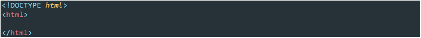На цьому етапі у Вас повинні виникнути 2 питання:
Тег – це команда, яка буде оброблятись нашим браузером і відтворюватись у доступному для нас вигляді.
Не має значення яким регістром писати теги. Теги бувають одинарні і подвійні.
Одинарні теги часто використовуються для «команд системи» (далі ми зустрінемось з ними) , але вони використовуються і для оформлення нашого html-файлу.
Одинарні теги прийнято закривати.
Приклад одинарного тегу:
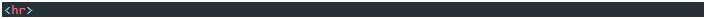Подвійний тег містить в собі дві частини: відкриту < > і закриту </ >. Між цими двома частинами і буде вводитись наш текст, який буде виводитись на екран.
Приклад подвійного тегу:
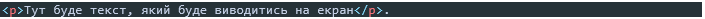Після того, як ми оголосили тип інформації у нашому файлі, показали межі, в яких будемо працювати, наша наступна частина структури html-файлу буде нагадувати людину. В ній буде голова - <head></head> і тіло - <body></body>. В голові будуть думки <title></title>,та якісь системні команди, а в тілі буде реалізація.
На даному етапі наша структура буде виглядати наступним чином:
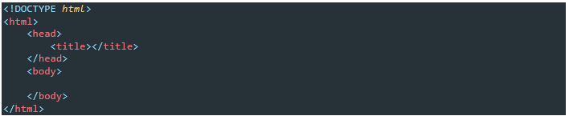Пройдемось по тегах детальніше:
На даний момент наша структура повинна виглядати наступним чином:
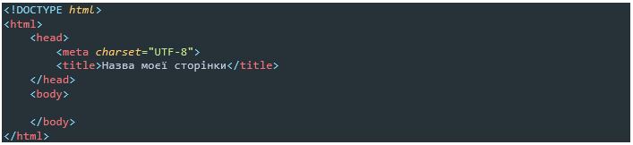Напевно ви побачили, що є теги які лежать між іншими тегами, наприклад як <head> і <title> </title>
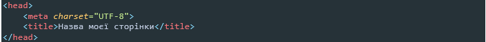Для зручності теги які лежать між іншими тегами робляться з відступом Tab. Це дає змогу краще бачити код, його початок і кінець та ієрархію.
Якщо ж ми подивимось на теги <head> I <body>, то побачимо, що вони лежать на одному рівні.
Це пов’язано з тим, що вони між собою рівнозначні і до того ж лежать у тегу <html> </html>
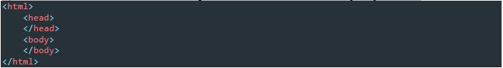… <h6> </h6> - цей тег використовується для створення заголовку. Тег h1- буде мати найбільший розмір букв, а h6 – найменший.
Спробуйте.
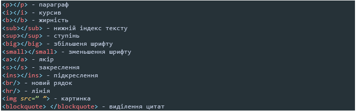Не можна розривати теги!!!
<h1><a>Львів</a></h1> - можна!
<h1><a> Львів </h1></a> - не можна!
Коментар в HTML виглядає наступним чином
<!--ХХХХХХХ-->
де ХХХХХХХ – може бути як звичайний текст так і теги
Блочним - називається елемент, який відображається на веб-сторінці у вигляді прямокутника. Такий елемент займає всю доступну ширину, висота елемента визначається його вмістом, і він завжди починається з нового рядка.( <div>, <h1>, <p>).
Рядковими- називаються такі елементи документа, які є безпосередньою частиною рядка. До рядковим елементів відносяться теги (<img>, <span>, <a>).
Є декілька різновидів списків:
Якщо ми бажаємо зробити список, тоді спочатку ми повинні вирішити, чи буде це нумерований, чи не нумерований список, а потім додавати в нього елементи списку <li></li>.
Для приклада нумерований список з трьох елементів:
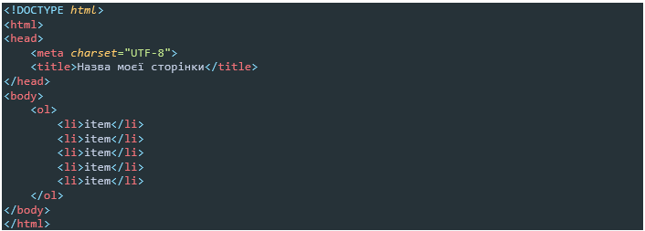Якщо ж ми бажаємо змінити вид маркування тоді треба додати до <ol> атрибут type=”I”давайте подивимось що буде:
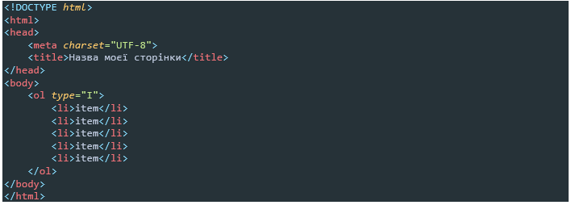Якщо нам потрібно зробити список із підпунктами, тоді ми використовуємо наступний прийом:
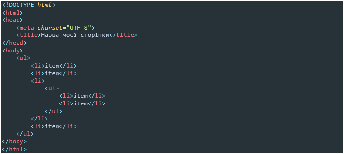Тобто ми помістили ще елементи списку між елементами.
Якір – це вид посилання, котрий знаходиться на одній сторінці, але в різних місцях. Частіше за все він застосовується для того, щоб зробити навігацію по сторінці зручнішою.
Зараз я наведу приклад , а ви подивитесь , що відбудеться:
Структура нашої сторінки , а точніше тіла, на даному етапі буде наступна:
Обновивши сторінку, ми побачимо, що у нашому списку 3й пункт в нас підсвітився. Чому? Тому що ми зробили посилання <a href=”#a3”>.
Якщо ж ми клікнемо на наше посилання, ми одразу перейдемо до п.3 нашого списку. Чому? Тому що, ми зробили якір до тексту, який прив’язаний до нашого пункту <a name=”a3”>. Таким чином ми можемо зробити посилання від будь-якої точки сторінки до будь-якої іншої точки сторінки.
Доречі, пусті посилання робляться наступним чином <a href=”#”> - це посилання буде підсвічуватись, але не буде нікуди вести.
Не можна надавати якорю ім’я яке складається лише з цифр. Не можна розділяти ім’я якоря пробілами.
Тепер розглянемо ситуацію, коли ми бажаємо зробити посилання на іншу сторінку.
Беремо той самий код і трішки змінюємо його:
Тепер при кліку на третій пункт нашого змісту, ми перейдемо на сторінку http://www.lgs.lviv.ua
Тобто, ми зробили посилання на зовнішню сторінку. У разі якорі, ми робили посилання на внутрішню сторінку (ту на якій знаходимось).
Тепер я хочу, щоб ви зробили наступне:
Завантажити картинку, вставити її в кінець сторінки і зробити від неї якір на верх сторінки (в початок).
Все це ви робити вже вмієте окремо, а тепер доведеться поєднати.
Є декілька видів розширення зображень .jpeg .jpg .png та інщі.
Картинки ми додаємо завдяки тегу <img src=” …..”>
Спочатку нам потрібно завантажити фото, а тепер прописати між лапками дорогу до нього.
Робимо. Зберігаємо, оновлюємо.
Якщо ж наше фото лежить не в тій самій папці в якій в нас лежить наш html-файл, тоді ми позначаємо шлях наступним чином …через /
Треба уважно дивитись чи вірно ви вказали розширення зображення.